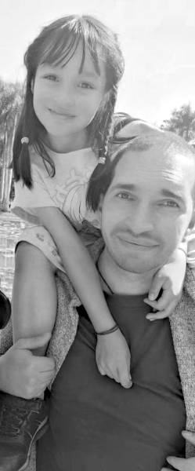
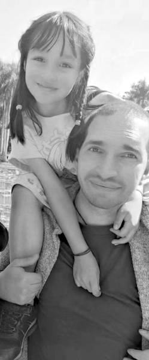

About & Contact
Educator, Coder, Innovator, Father,
Business Owner, Non-Profit Director,
Voting Volunteer, Book Lover...
Hello! I'm Brian, an individual passionate about technology, creativity, education, and innovation. With a diverse background in computer science, education, arts, and philosophy, I strive to foster creative innovation and exploration. I've been lucky enough to work within diverse teams of people from more cultures and backgrounds than I can recall.
In education and technology, I've worked in three outstanding schools over the past ten years. I had the opportunity to develop science curricula and assessments that inspire students to explore and create. I've ventured into AI with projects like my autonomous robot, always seeking to push the boundaries of what's possible. I see the best in everyone I meet, and I try to create opportunities. I learn from my mistakes, which are many, and commit to improving. I know my limitations and strengths and work with others to achieve common goals.
Outside of my professional life, I'm a father of two, an avid reader, a science fiction book club facilitator, and a volunteer for American voters in China. I find joy in connecting with individuals who share a love for meaningful conversations and interesting ideas. My values are rooted in collaboration, integrity, and continuous learning. I believe in the power of progress through innovation, opportunity, and kindness. I am also a small business owner and a director of a non-profit recycling company.
I remain humble and open-minded in every endeavor, always eager to learn from others and contribute to a more enlightened and compassionate world. I'm driven by the thrill of exploring new ideas, creating impactful projects, and forming lasting connections with those who share my passion for making a difference.

Education and Awards
- Professional Certificate: Fundamentals of Google AI for Web Based Machine Learning
- “四有” 好老师 (Four Qualities Excellent Teacher)
- Dianchi Experimental School, 2018
-
- I was recognized by the leadership of the public school I worked in. The Four Qualities Award is given to teachers who show Revolutionary Ideas, Moral Character, Professional Learning, and Compassion for Students.
- Star Teacher Award
- IC Academy, 2018
- Bejing based education organization that invested in the school where I worked
- Master of Education: Globalization in Education
TEACH-NOW Graduate School of Education, 2017
- TESOL Certificate
OnTESOL, 2014
- BA in Fine Art Studies: Computer Science, Visual Arts, and Dance
Lake Superior State University, 2013
Contact
- Email: brian.k.da.cn@gmail.com
Hello! I'm Brian, an individual passionate about technology, creativity, education, and innovation. With a diverse background in computer science, education, arts, and philosophy, I strive to foster creative innovation and exploration. I've been lucky enough to work within diverse teams of people from more cultures and backgrounds than I can recall.
In education and technology, I've worked in three outstanding schools over the past ten years. I had the opportunity to develop science curricula and assessments that inspire students to explore and create. I've ventured into AI with projects like my autonomous robot, always seeking to push the boundaries of what's possible. I see the best in everyone I meet, and I try to create opportunities. I learn from my mistakes, which are many, and commit to improving. I know my limitations and strengths and work with others to achieve common goals.
Outside of my professional life, I'm a father of two, an avid reader, a science fiction book club facilitator, and a volunteer for American voters in China. I find joy in connecting with individuals who share a love for meaningful conversations and interesting ideas. My values are rooted in collaboration, integrity, and continuous learning. I believe in the power of progress through innovation, opportunity, and kindness. I am also a small business owner and a director of a non-profit recycling company.
I remain humble and open-minded in every endeavor, always eager to learn from others and contribute to a more enlightened and compassionate world. I'm driven by the thrill of exploring new ideas, creating impactful projects, and forming lasting connections with those who share my passion for making a difference. 
- Dianchi Experimental School, 2018
- I was recognized by the leadership of the public school I worked in. The Four Qualities Award is given to teachers who show Revolutionary Ideas, Moral Character, Professional Learning, and Compassion for Students.
- IC Academy, 2018
- Bejing based education organization that invested in the school where I worked
-
TEACH-NOW Graduate School of Education, 2017
-
OnTESOL, 2014
-
Lake Superior State University, 2013
Contact
- Email: brian.k.da.cn@gmail.com